P1Lab / Original films & cultural programming
FLORIDA FIELD & OCEAN
Florida, in the making.
Across Florida, a distinctive way of life is being made and remade—in its architecture and gardens, hotels and waterfronts, kitchens and studios, workshops and marinas. Florida Field & Ocean follows the people, places and ideas giving the state its character through original films and considered cultural programming.
A P1Lab initiative / Florida, USA
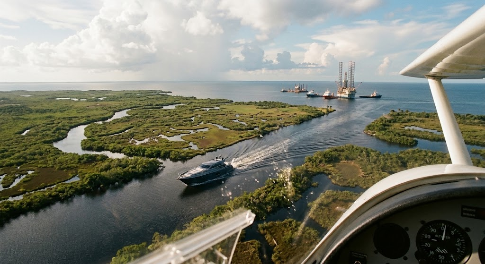
A state worth seeing.
A culture worth hearing.
A culture worth hearing.
Florida Field & Ocean / The idea
A state still
becoming.
Florida is often reduced to a destination, a market, or a familiar set of images. Yet its character is still being made—in architecture and landscape, hospitality and food, art and design, yacht yards and workshops, ambitious new enterprises and long-rooted communities.
Florida Field & Ocean follows the people shaping that evolving culture. Its films look closely at how places are conceived, how things are made, and what gives a work, a business, or an institution lasting character.
From a considered hotel or waterfront estate to an artist’s studio, custom yacht, remarkable garden, food producer, or cultural institution, each subject becomes a window into the tastes, ideas and ambitions shaping life in Florida.
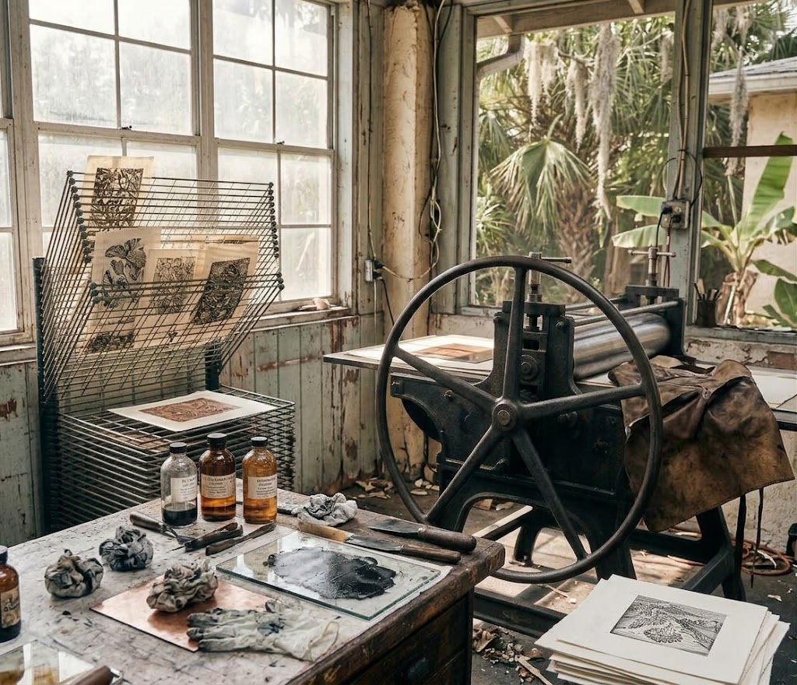
Portrait / process / place
The work. The person. The world around them.
Florida Creates / Arts, ideas & design
Culture is how a place imagines its future.
Florida’s cultural life is more than an ornament to its economy. It is one of the ways the state imagines and expresses itself. Florida Field & Ocean makes room for artists, musicians, performers, writers, architects, designers and craftspeople whose work gives that life texture, character and direction.
A film might stay with an artist in the studio, follow a rehearsal, enter a performance, or trace an idea as it takes shape. The camera stays close to the work: its decisions, gestures, materials, sounds and moments of uncertainty, with enough time for something genuine to emerge.
The aim is not celebrity coverage or an event reel, but a growing record of imagination, taste, craft and debate as Florida’s culture evolves.
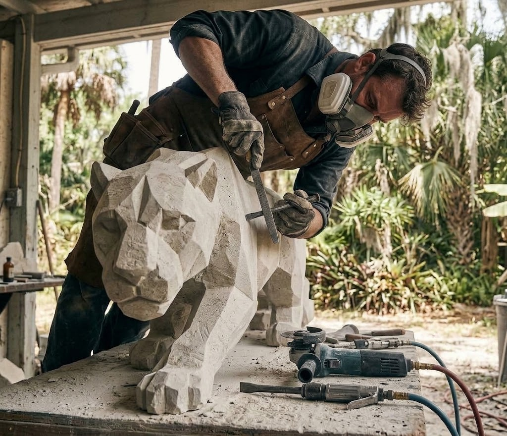
Program form / 01In the studio
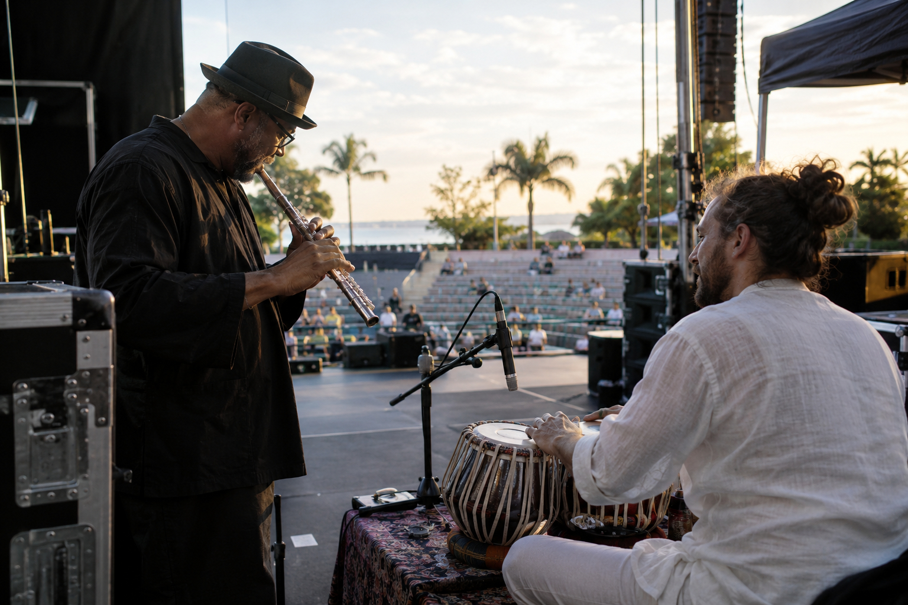
Program form / 02In performance
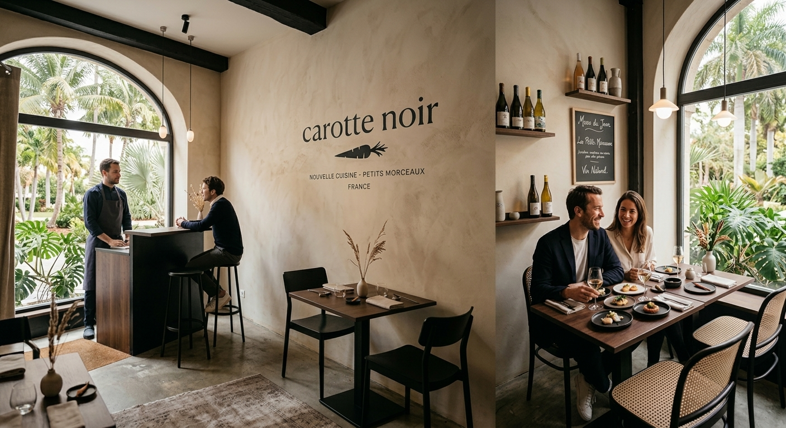
Program form / 03A sense of place
The same editorial eye can move between long-form documentaries, short portraits, performances, conversations and sound-led observations of Florida’s people and places.
Editorial Scope / A Changing Florida
One state.
Many ways of seeing and experiencing it.
Florida Field & Ocean explores the state through a broad range of editorial interests: its architecture and designed spaces, cultural life and social worlds, ways of living, specialist crafts, enterprise and natural environments. These areas define the scope of the initiative, not a fixed slate of programmes. Individual films and series take shape around the people, places, practices and ideas that reveal something distinctive about Florida and the direction in which it is moving.
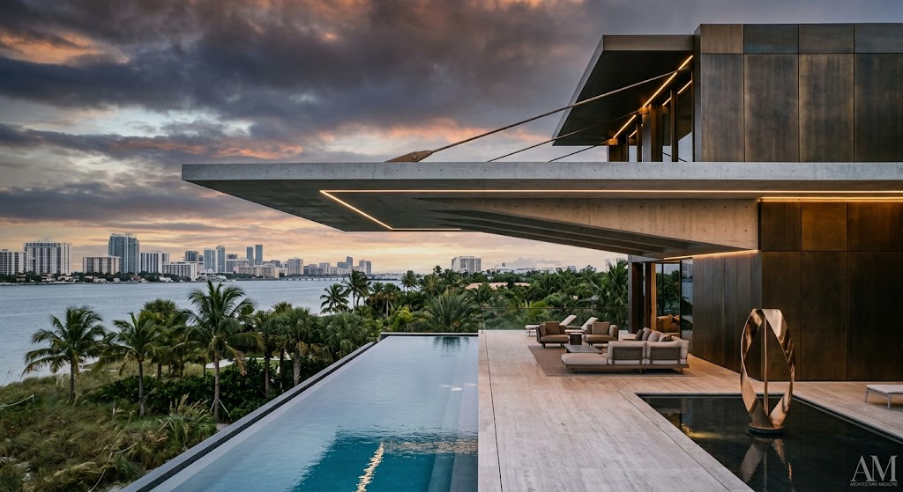
Built form & place
Florida Built
Architecture, landscape, restoration and distinctive properties: the spaces being imagined, the materials that shape them and the details that give a place lasting character.
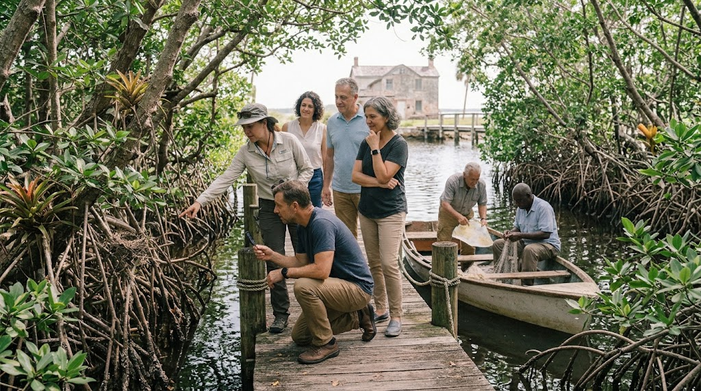
Activities & Discovery
Florida, Firsthand
A golf course at first light, an archery range, a vineyard tasting, a historic house with stories to tell, a boat turning into the backwaters. Florida, Firsthand explores the places you go, the things you try and the people who know them best.
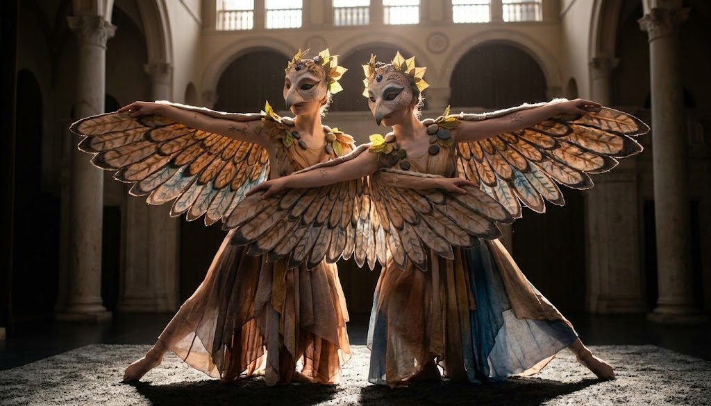
Art & cultural life
Florida Creates
Artists, musicians, performers, writers and designers shaping Florida’s cultural life, from established institutions and independent studios to work still finding its audience.
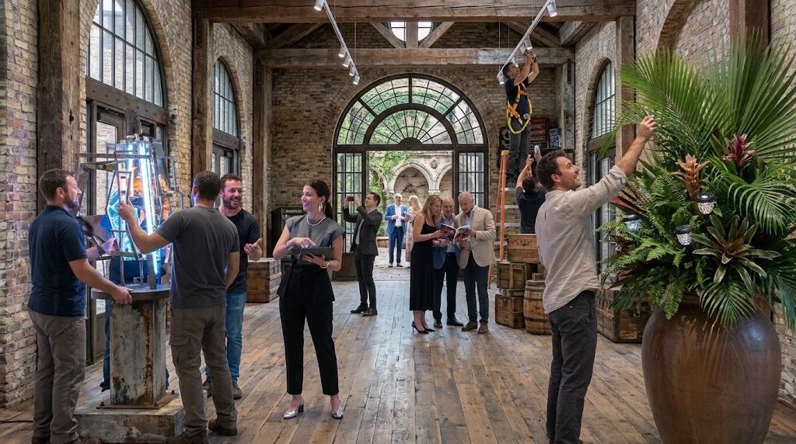
Society, Style & Events
Florida Society & Style
Fashion, personal style, significant gatherings, cultural openings, philanthropy and the people shaping Florida’s social and cultural life. A portrait of the occasions and relationships through which a culture is expressed and renewed.
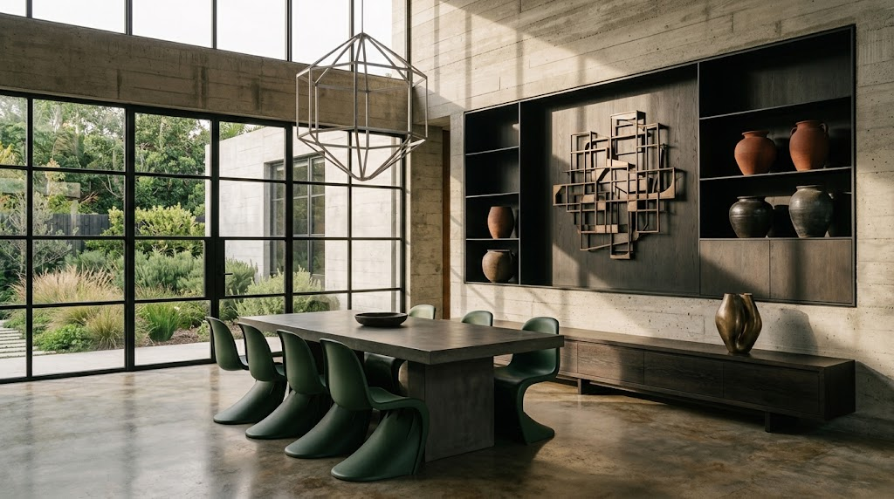
Home, Objects & Design
Florida at Home
Furniture, lighting, interiors, kitchens, home technology and outdoor living: the considered products and design choices that shape Florida homes, hospitality spaces and life on the water.
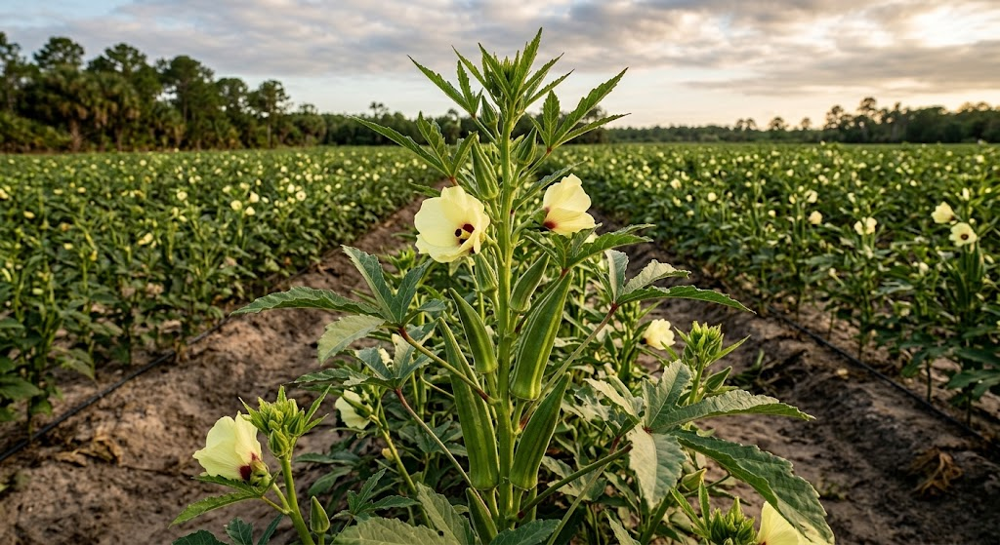
Land & cultivation
Florida Cultivated
Farms, specialty crops, gardens, growers and food makers: the land, knowledge and changing tastes behind what Florida cultivates and brings to the table.
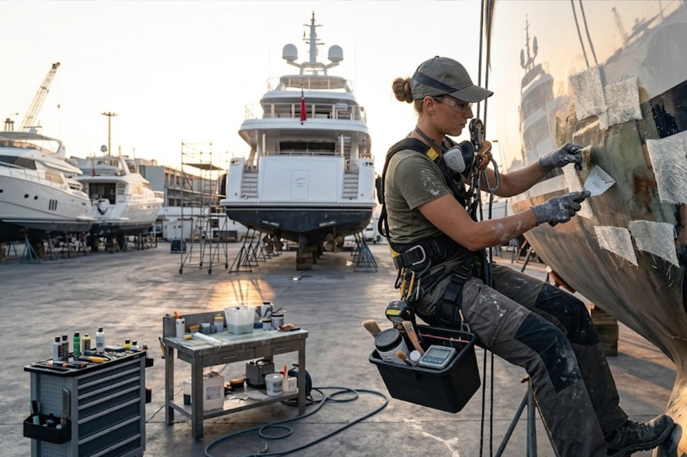
On the water
Florida on the Water
Yacht design, construction and refit, marinas and coastal life—along with the people and specialist knowledge behind Florida’s enduring relationship with the water.
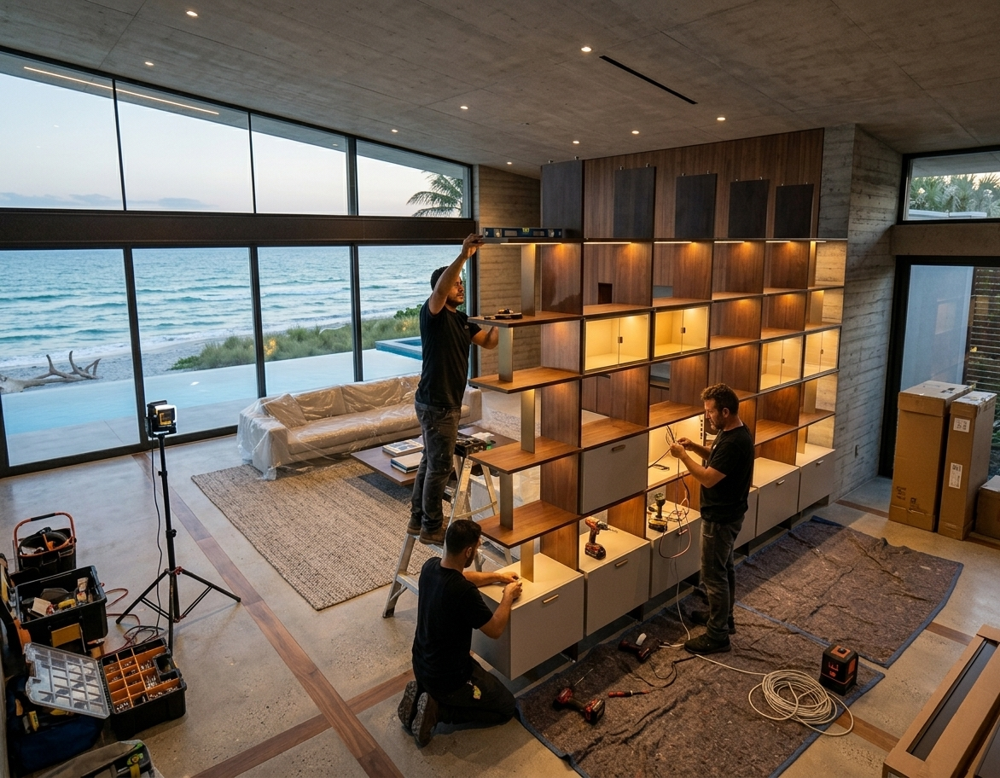
Making & know-how
Florida Made
Makers, workshops, specialist trades and manufacturers: the materials, techniques and hard-won knowledge behind the things made in Florida.
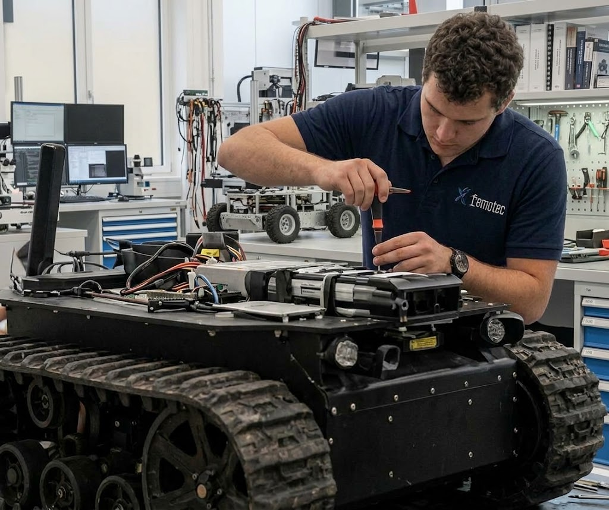
Enterprise & ideas
Florida Forward
Businesses, institutions, investment and new ideas: the people building ventures, testing possibilities and helping shape Florida’s next chapter.
Different worlds, one editorial standard: strong images, meaningful sound, informed research, and respect for the viewer’s attention.
The principle / Ambitious in outlook. Serious in treatment.
Not content for the feed.
A living portrait of Florida.
Florida Field & Ocean takes the long view. Florida's identity is still unfolding: its architecture, artists, hospitality, enterprise, food, craft, social life and natural worlds. Strong images, intelligent conversation and sound that belongs to the subject make room for more than a passing impression. The aim is to build a lasting portrait of Florida as it is lived, imagined and continually remade.
The work / Editorial & production
Care behind
every frame.
Florida Field & Ocean is developed through P1Lab, bringing editorial direction together with specialist production and post-production collaborators selected for each subject.
Experience spans documentary filmmaking, broadcast, editorial, post-production and digital media. The approach changes with the material: a portrait, a performance, a complex technical process and a place observed over time each call for a different kind of attention.
Research, access, filming, sound, editing, finishing and presentation are considered as connected parts of one process. The aim is to make each film coherent in its own terms while giving it a place within the larger editorial identity of Florida Field & Ocean.
The emphasis is the finished work: films with a clear point of view, visual precision and enough context to reward the viewer’s attention. Each subject determines the expertise and method required to tell it well.
Specialist collaborators and technical resources are selected to suit
the demands of the story. Editorial purpose comes first; the method
follows from the subject.
The channel / Where stories live
Made to be seen.
Made to last.
Florida Field & Ocean is conceived as a curated, on-demand home for original films and series. Each work can stand on its own while joining a wider portrait of Florida—one that viewers can discover, revisit and share beyond a single premiere or moment of attention.
Give each subject its own form.
Films begin with a clear editorial point of view and are shaped around the people, places, practices or ideas at their centre—not a standard promotional-video formula.
Let the story travel further.
Some projects may also take shape through shorter films, selected stills, a publication or a dedicated web presentation—forms chosen when they add meaning or make the work more useful in context.
Build a record over time.
As the catalogue grows, each completed work adds another perspective to the state’s cultural, creative, material and natural life. Together, the films become more than a sequence of isolated stories.
Viewing / Distribution
Across the screens
people use.
The viewing experience is being developed for web browsers, mobile devices and connected televisions. Specific apps and device availability will depend on deployment, platform approvals, technical requirements and service availability at launch.
01 / Web
- Desktop browsers
- Mobile browsers
- Responsive HTML5 viewing
02 / Mobile
- Apple iPhone and iPad
- iOS apps
- Android apps
03 / Connected television
- Apple TV
- Android TV / Google TV
- Amazon Fire TV
- Roku
- Samsung Tizen TV
- LG webOS TV
The planned launch is Q1 2027, subject to platform deployment, approvals and service availability.
Beyond the first viewing / Where stories travel
A story can live
beyond the screen.
A considered film can be encountered in more than one setting: watched on its own, shared online, presented at a gathering or experienced in a place connected to its subject. Additional uses depend on the production and the permissions established for it.
Give a subject room to open up.
A film can introduce a place, a practice or a point of view in a meeting, presentation or public conversation.
Let the setting tell its story.
Films can be experienced in suitable hospitality, cultural, visitor or exhibition settings where the story adds context to the place.
Carry the story forward.
Selected versions may be shared through websites, events and communications when the relevant usage rights permit.
Place it in a wider portrait.
Within Florida Field & Ocean, each film sits alongside other perspectives on the state’s people, places and evolving identity.
Editorial method / From idea to screen
Attentive at
every stage.
Every production begins with a subject that rewards attention. Research, access, point of view, filming, sound and final presentation are considered together so the finished work is shaped by the subject—not by a standard formula.
-
Find the story
Establish the central question, the people and places involved, and what makes this particular subject worth a viewer’s time.
-
Establish the point of view
Develop the editorial approach, research, access and visual plan before filming begins.
-
Follow the material
Filming, interviews, location sound, music, editing and any companion materials are brought together in response to the demands of the story.
-
Finish and place the work
Complete the film, confirm factual details and permissions, and establish its appropriate presentation and uses.
In conversation / People and institutions
Many hands shape
a place.
Florida Field & Ocean is informed by people and organizations closely connected to the stories it explores. A place, a practice, a body of expertise, a cultural institution or an enterprise can open a door onto something larger about Florida.
Stories rooted in real practice.
Architects, artists, makers, hoteliers, growers, yacht builders, designers, specialist businesses and others whose work reveals something distinctive about the way Florida is made and lived.
A view beyond one story.
Cultural institutions, regional groups and organizations whose knowledge, collections, places or long-term work can illuminate Florida’s broader cultural, creative and material life.
Editorial purpose comes first. A collaboration is most compelling when it opens a door, deepens understanding or reveals something that would otherwise remain unseen. Every story must offer a reason to watch beyond the identity of the organization connected to it.
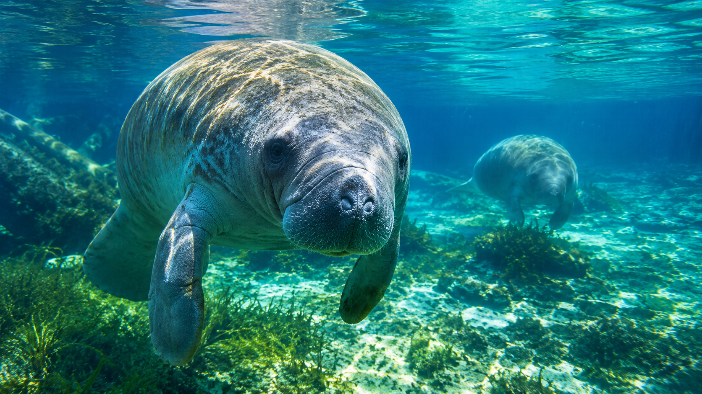
P1Lab Original / Documentary SeriesSelected Production / Natural History
Florida Below
A different way of seeing Florida.
A proprietary six-film documentary series following the connections between Florida’s springs, rivers, mangroves, seagrass meadows and reefs. Rather than treating each place as an isolated destination, the series explores how water, geology and wildlife shape one another across the landscape.
One example of Florida Field & Ocean’s production range: a specialist subject, a clear editorial point of view, considered cinematography and scientific depth made compelling on screen.
Explore Florida BelowFlorida Field & Ocean / Begin a conversation
What in Florida deserves a closer look?
We welcome conversations with people and organizations creating, preserving or reimagining something distinctive in Florida. If a place, practice, person or idea deserves a more considered film, we would like to hear about it.
Project status & image disclosure
Florida Field & Ocean is a P1Lab film and cultural initiative exploring Florida’s people, places, environments and material culture.
For this project, documentary integrity governs the image-making process. Original image conception, art direction, photography, documentary footage, and visual asset selection are human-directed. Generative tools are used only for defined post-production tasks: compositing, including the creation of backgrounds and the integration of two or more existing images, and mastering. They are not used to originate visual concepts, direct photography, or generate documentary source imagery.
The visual fields shown here communicate the intended composition, subject matter, and presentation of the finished work. Final programming, platform deployment, distribution, and partner participation are established for each production. Viewing availability depends on the selected platforms, technical requirements, applicable approvals, and written agreements. Partner usage rights are defined separately for each production.